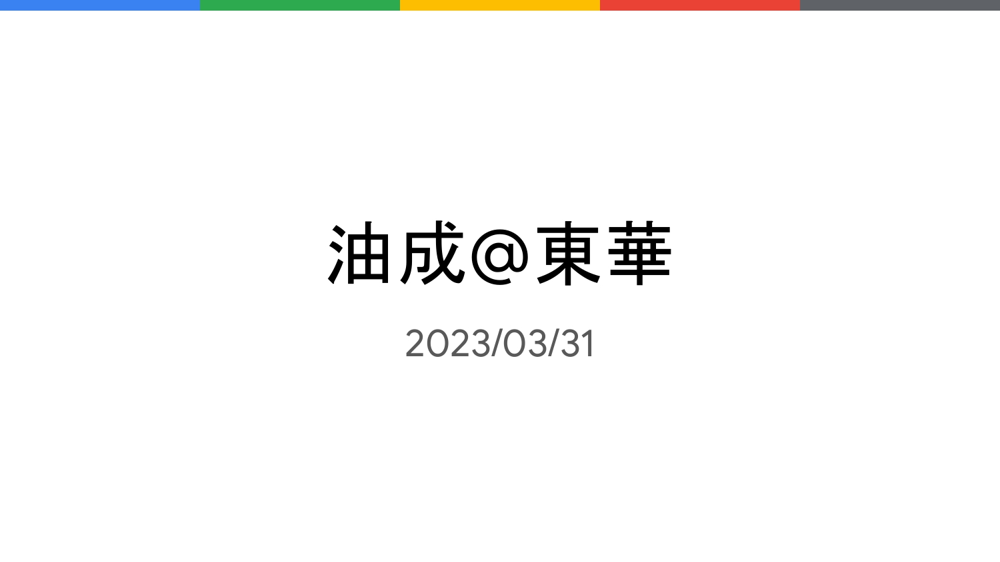
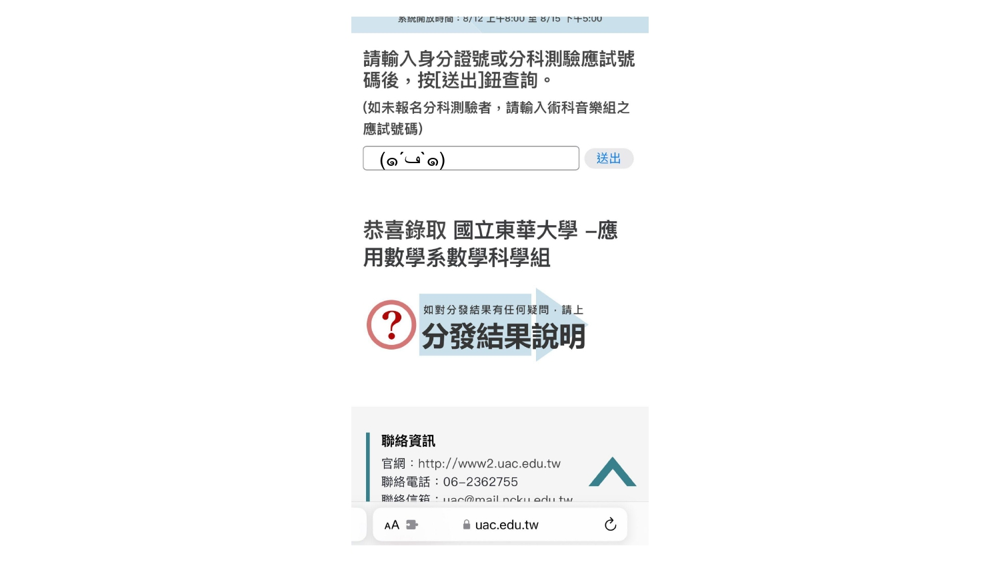
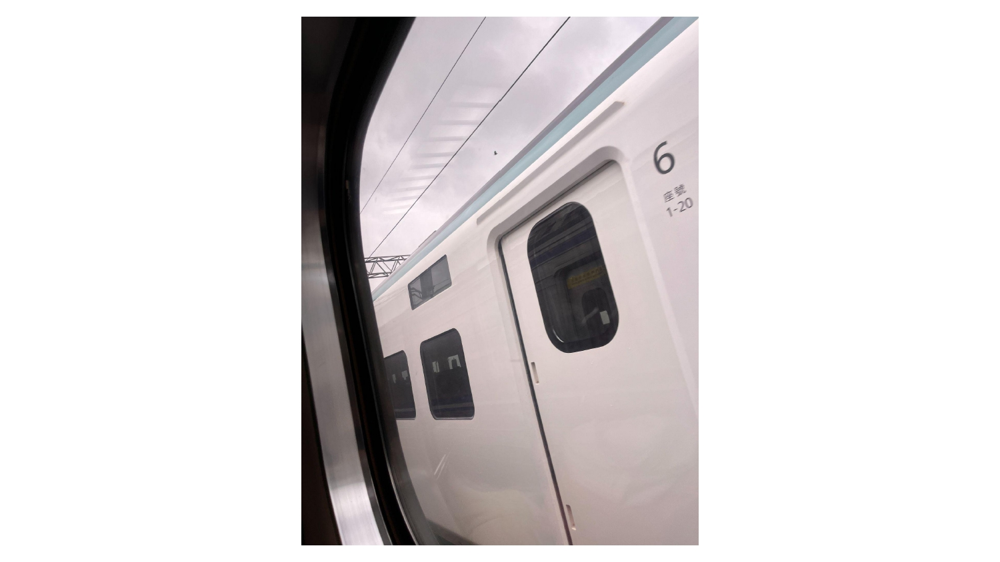
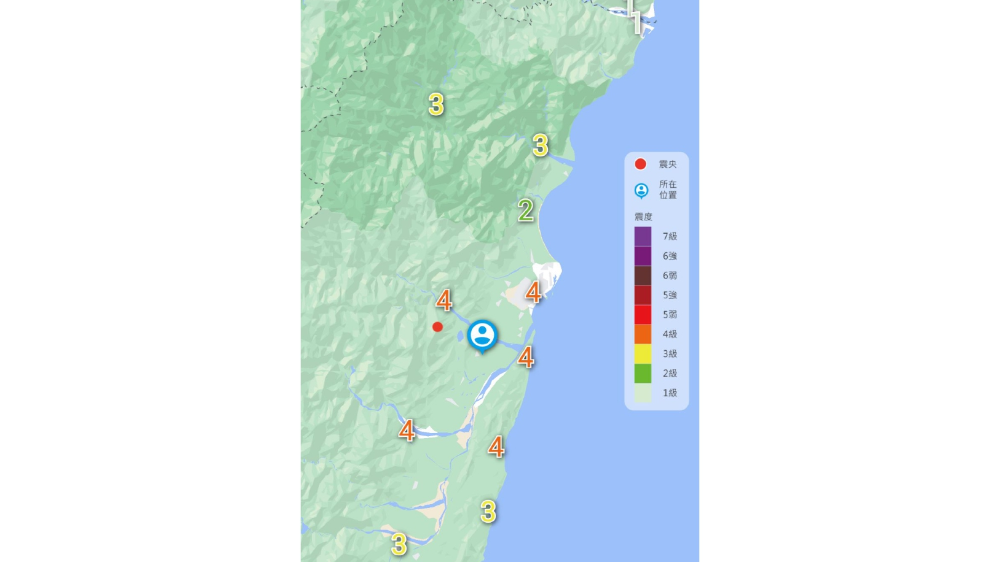
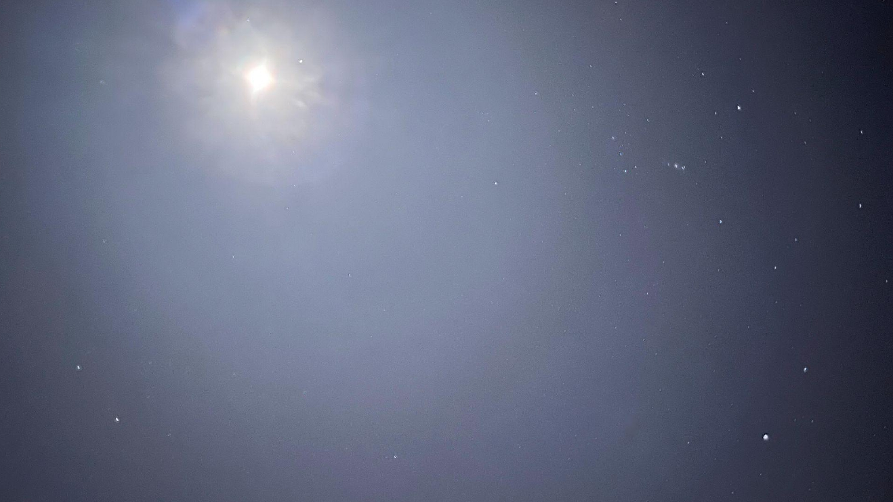
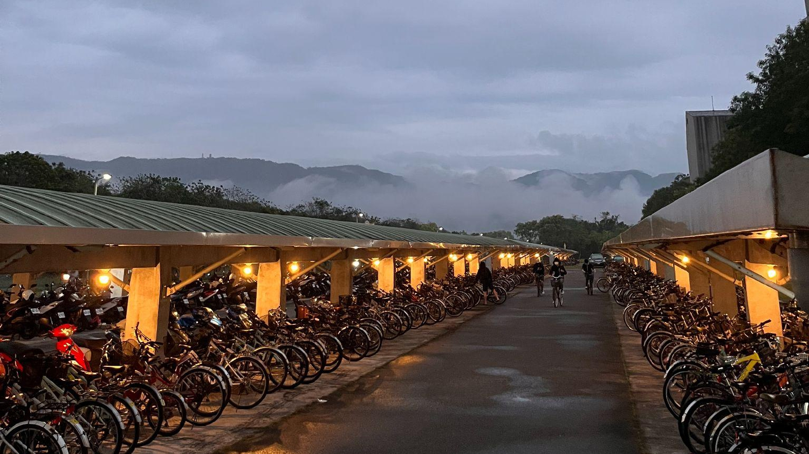

「東華，我遇見 ⋯⋯」是我在東華大一下中文與涵養課程中的作業，以一本書 、人、 事，甚至一堂課為題，紀錄在東華上學期所經歷的所見所聞。
除了抒發回顧之情，期待也能透過分享幫助未來學子了解對此地生活的想像。

在一個暖暖的午後，我醒來了；看到考試分發的結果，我哭了，這讓我感到失落與無助。 對我而言，花蓮是一個相對去臺北，更加遙遠之處，早已習慣都市便利生活的我，躺在床上頓時腦袋一片空白。
早上 08:00 是考試分發放榜的時間，我那天甚至開會到清晨 5 點多才躺回去床上ㄛㄛ睏，直到中午 12:00 溫馴的陽光從窗邊透入才滿足地醒來。 拿起手機查看結果之際，我的腦袋應該狂噴 500 Error，遲遲不肯 return anything。

搬宿那天行經東海岸約莫六個小時，來到了這塊土地，呼吸著這別於大城市中的工業廢氣，沁人心脾的乾淨空氣，這讓我感到舒適。東華，我遇見新鮮空氣，是那個過敏兒夢寐以求的絕佳空氣品質，這也讓我開始對這個地方產生了好感。
也是開學前幾天來到東華，一家人駕著夜車沿著花東海岸公路北上到花蓮，沿途風景盡收眼底，空氣品質也相較高雄乾淨不少。 我準備了一段日出影片，紀錄了當下日出景致和海浪拍打聲。2022/09/10 - 行經花東海岸公路日出
乘坐著台鐵四處走踏，到市區、到壽豐，再到新城，一路享受著鐵路空隆空隆的搖晃感，享受著一不小心就出軌的刺激未知感，開啟了我的冒險旅程。 東華，我遇見台鐵捷運化，體驗鐵路地下化後不曾體驗過的便利，這也讓我發覺這個地方其實很現代化。
台鐵捷運化在高雄是伴隨著鐵路地下化建設後的夢想(?)，雖然高雄也具備捷運的建設，但相較之下的使用情景與使用率仍大有不同。 直到來到花蓮並以鐵路為主要交通工具後，我才發現花蓮的交通並無刻板印象中落後。
下圖是台鐵在 2021 年起引入的 EMU3000 型電聯車，其中車側邊條「紅變綠」的設計則為 2022 年暑期抵達的編組。謎之音：3000 東部滿街跑，想搭就搭好快樂 rr ヾ(´∀ ˋ)ﾉ。

隨著一陣隧動聲，「啊——震了！震了！」，打開手機查看地震報告，哎呀！震央就在距離東華不遠處，這讓我感到驚恐。東華，我遇見無情的震央，那頭雀躍的地牛震得我不要不要的，這也讓我感受到生命的脆弱與珍貴。
不知為何，來到花蓮逐漸養成提防地震的敏感神經，身上就像裝了顆地震隧動聲的檢測器，只要一有小小的隧動聲就不自覺提高地震的警覺。

夜晚，看著在繁星當中閃爍的獵戶星座。Friday Night 歡愉的歌舞聲，為一週繁忙的疲憊注入活水。東華，我遇見了對生命充滿熱情的真摯，享受著星空下的美好夜晚，讓我找到心靈的寧靜。
東華位在壽豐鄉志學村，距離交通相較便利的市區有段距離，晚間過 20:00 後的店也關得差不多了。學生除了來自臺灣各地與原住民，也有來自國際的外籍生，學校也展現積極規劃娛樂性質的活動，藉以凝聚情感。
附圖是星空，因為光害少反而容易觀察到以往在都市鮮少接觸的景致。

在這裡，我成功將自己從紛亂的都市生活中抽離出來，沉思自己的人生方向。東華，謝謝你讓我遇見這麼多不同的人事物，讓我重新找回自己。
最後一張是 2023 年 3 月底雲霧繚繞的風景。由於志學村東西與山脈相臨，因此每當水氣足夠時則容易形成放眼望去雲霧飄緲的神秘感。
